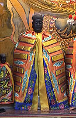

天公爐（鹿港民宅）

竈神（臺南天壇）
中國古語說到「人法道，道法天，天法自然」，這表示中國人在建築中處處可見敬天法祖的精神，臺灣古建築包括寺廟、住宅、與防禦設施、砲臺等，這些地方皆有祭祀神祇，這就反映出人們對於自然或超自然力量的敬畏。
寺廟是供奉神明之處，大殿通常奉著主神，像是佛教如來佛與觀世音菩薩等，前殿門板上則會彩繪著門神，如秦叔寶、尉遲恭等。
而在一座住宅中，正堂的翹頭供桌上擺著祖宗牌位，象徵祖先高高在上，庇佑子孫。樑下則有「天公爐」，是祭拜天公上帝時插香用的。有些客家人的天公爐則是設在戶外，也是朝拜天神的意思。
另外在廚房竈邊的牆上，可以看到竈神的神像，因為人們認為竈神可以照顧人們得飲食，照理說應要受到崇拜。
在砲臺之處則常供奉中國的戰神關公，據說能幫軍隊常打勝戰。城門的地方，常建立土地公廟，是希望請土地公幫忙守門之意。